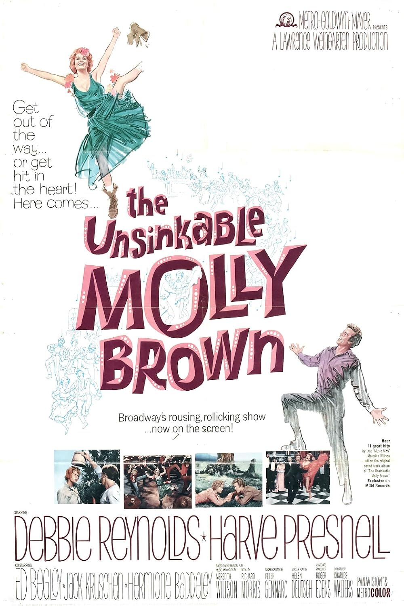

The Unsinkable Molly Brown
37th Academy Awards
(Oscars 1965)
6 Nominations, 0 Awards
| Nominations | ||
|---|---|---|
| Category | Nominees | Result |
| Actress | Debbie Reynolds | Nominated |
| Cinematography (Color) | Daniel L. Fapp | Nominated |
| Art Direction (Color) | George W. Davis, Henry Grace, Hugh Hunt, and Preston Ames | Nominated |
| Costume Design (Color) | Morton Haack | Nominated |
| Sound | Franklin E. Milton | Nominated |
| Music (Scoring of Music--adaptation or treatment) | Calvin Jackson, Jack Elliott, Jack Hayes, Leo Arnaud, Leo Shuken, and Robert Armbruster | Nominated |